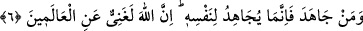

“Kim Allah’a kavuşmayı umuyorsa,”
“Ummak” fiili, sevinmeyi gerektiren bir zannı ifâde eder. “Korku” ile tefsir edilip
açıklanmasının sebebi, bu iki kelimenin birlikte kullanılması, birinin diğerinden ayrı
düşünülmeyip birbirlerinin mütelâzimi olmasıdır. “Allah’a kavuşmak” ile kıyâmet günü
ve Allah’a dönüş kasdedilir.
Yani, her kim sevap ve cezâ ile karşılaşacağını bekler ve umarsa; sevaba ve güzel
sonuca götüren amelleri işlemek ve kötü azâba sebep olanlardan da kaçınmak suretiyle,
sırf kendi irade ve ihtiyarıyla Allah’ın bu belirli süresine, yâni kıyamet gününe
hazırlansın.
“Bilsin ki Allah’ın tayin ettiği o vakit elbet gelecektir.”
“Ecel”, müddet ve süre mânâsına gelir. Her hangi bir iş için tâyin edilen uzun bir
zamanın sonunu ifâde eder. Bazen bu zaman diliminin tamamı için de aynı kelime
kullanılmıştır. Dolayısıyla Allah Teâlâ’nın kıyâmet günü için belirlediği süre ise
mutlaka gelecektir, demektir.
Çünkü zamanın cüzleri dâimî bir kesilme ve sona erme üzerine kurulmuştur. Onun için
belirlenmiş vakit mutlaka gelir. Vaktin gelişi ya da getirilişi ise likâyı (Allah’a
kavuşmayı) ve cezâyı (amellerinin karşılığını görmeyi) kaçınılmaz kılar.
“O, her şeyi işiten ve bilendir.” O Allah, kullarının sözlerini işitendir, görünen ve
görünmeyen bütün amellerini bilendir. Hiç bir şey O’ndan kaçmaz. Onun için siz bu
zaman gelmeden önce amel etmede acele davranın.
et-Te’vîlâtü’n-Necmiyye’de der ki: Sevab kazanmayı uman, azâbı gerektiren
amellerden kaçar ve mücâhedelere sarılır. Zîrâ mücâhedeler müşâhedelere sebep olur.
Ömrünü bize kavuşma arzu ve ümidiyle geçirene, biz de cemâlimize bakma yolunu
açarız.
Bir gözün himmeti ne büyüktür ki;
O seni görmeğe tamah etti.
Yahud da bir göz için kâfîdir;
O’nun seni görmesi...
“O,” Allah, âşıkların feryâdlarını “işitendir,” sâdık şefkatlilerin inlemelerini
bilendir.”